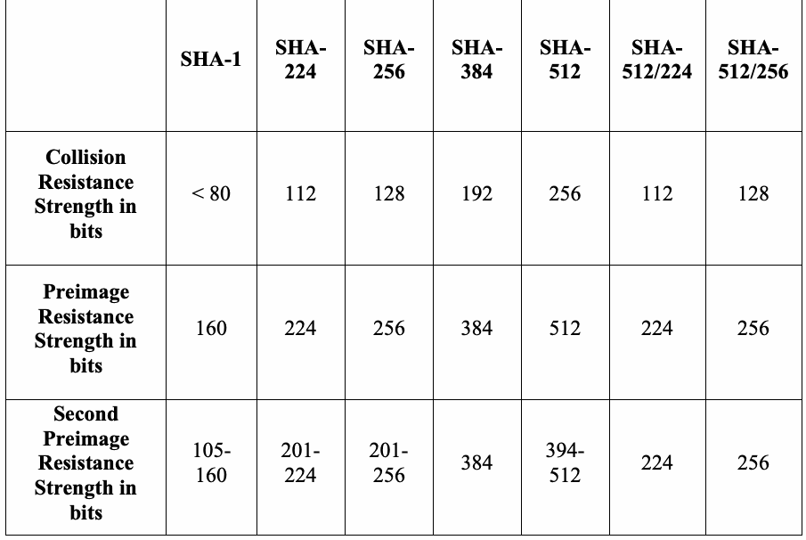
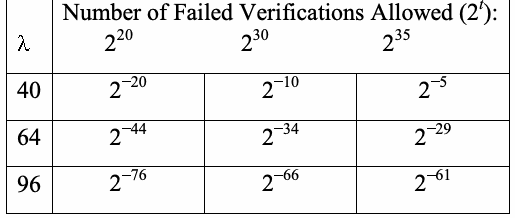

NIST Special Publication · PDF 原文抽出
Recommendation for Applications Using Approved Hash Algorithms
承認済みハッシュアルゴリズムを使用するアプリケーションに関する推奨事項
NIST SP 800-107 Rev. 1（Recommendation for Applications Using Approved Hash Algorithms）の英文と日本語訳を段落ごとに並べた閲覧用ページです。デジタル署名、HMAC、ハッシュベース鍵導出関数などで承認済みハッシュ関数を使う際に、必要または望ましいセキュリティ強度を実現するための指針を示します。 翻訳は非公式です。要件の確認にはNIST の正式版 PDFを参照してください。
PDF から抽出した原文は原本との照合待ちです。
NIST Special Publication 800-107
NIST特別刊行物 800-107
未レビュー訳Revision 1
改訂第1版
未レビュー訳Recommendation for Applications Using Approved Hash Algorithms
承認済みハッシュアルゴリズムを使用するアプリケーションに関する推奨事項
未レビュー訳Quynh Dang
Quynh Dang
未レビュー訳Computer Security Division Information Technology Laboratory
コンピュータセキュリティ部門 情報技術研究所
未レビュー訳C O M P U T E R S E C U R I T Y
コンピュータセキュリティ
未レビュー訳August 2012
2012年8月
未レビュー訳PDF原本のp.1にある図
U.S. Department of Commerce Rebecca M. Blank, Acting Secretary
米国商務省 Rebecca M. Blank（長官代行）
未レビュー訳National Institute of Standards and Technology
米国国立標準技術研究所
未レビュー訳Patrick Gallagher, Under Secretary of Commerce for Standards and Technology and Director
Patrick Gallagher（商務省標準技術担当次官兼所長）
未レビュー訳Abstract
概要
未レビュー訳Hash functions that compute a fixed-length message digest from arbitrary length messages are widely used for many purposes in information security. This document provides security guidelines for achieving the required or desired security strengths when using cryptographic applications that employ the approved hash functions specified in Federal Information Processing Standard (FIPS) 180-4. These include functions such as digital signatures, Keyed-hash Message Authentication Codes (HMACs) and Hash-based Key Derivation Functions (Hash-based KDFs).
任意の長さのメッセージから固定長のメッセージダイジェストを計算するハッシュ関数は、情報セキュリティの多くの用途で広く使用されている。本書は、連邦情報処理標準（FIPS）180-4で規定される承認済みハッシュ関数を用いる暗号アプリケーションにおいて、要求される、または望ましいセキュリティ強度を実現するためのセキュリティ指針を示す。対象には、デジタル署名、鍵付きハッシュメッセージ認証コード（HMAC）、ハッシュベース鍵導出関数（ハッシュベースKDF）などが含まれる。
未レビュー訳KEY WORDS: digital signatures, hash algorithm, hash function, hash-based key derivation algorithms, hash value, HMAC, message digest, randomized hashing, random number generation, SHA, truncated hash values.
キーワード：デジタル署名、ハッシュアルゴリズム、ハッシュ関数、ハッシュベース鍵導出アルゴリズム、ハッシュ値、HMAC、メッセージダイジェスト、ランダム化ハッシュ、乱数生成、SHA、切り詰められたハッシュ値。
未レビュー訳Acknowledgements
謝辞
未レビュー訳The author, Quynh Dang of the National Institute of Standards and Technology (NIST) gratefully appreciates the contributions and comments from Elaine Barker, William E. Burr, Shu-jen Chang, Lily Chen, Donna F. Dodson, Morris Dworkin, John Kelsey, Ray Perlner, W. Timothy Polk and Andrew Regenscheid. The author also appreciates comments from Daniel Brown, Hugo Krawczyk, Praveen Gauravaram and Richard Davis during the development of this Recommendation.
NIST（米国国立標準技術研究所）のQuynh Dang氏は、本推奨事項の策定にあたり、Elaine Barker、William E. Burr、Shu-jen Chang、Lily Chen、Donna F. Dodson、Morris Dworkin、John Kelsey、Ray Perlner、W. Timothy Polk、Andrew Regenscheidから寄せられた貢献とコメントに謝意を表する。また、策定過程でコメントを寄せたDaniel Brown、Hugo Krawczyk、Praveen Gauravaram、Richard Davisにも謝意を表する。
未レビュー訳Table of Contents
目次
未レビュー訳1 Introduction — 2
1 はじめに — 2
未レビュー訳2 Authority — 2
2 権限 — 2
未レビュー訳3 Glossary of Terms, Acronyms and Mathematical Symbols — 3
3 用語、頭字語および数学記号 — 3
未レビュー訳3.1 Terms and Definitions — 3
3.1 用語と定義 — 3
未レビュー訳3.2 Acronyms — 6
3.2 頭字語 — 6
未レビュー訳3.3 Symbols — 6
3.3 記号 — 6
未レビュー訳4 Approved Hash Algorithms — 6
4 承認済みハッシュアルゴリズム — 6
未レビュー訳4.1 Hash Function Properties — 6
4.1 ハッシュ関数の特性 — 6
未レビュー訳4.2 Strengths of the Approved Hash Algorithms — 8
4.2 承認済みハッシュアルゴリズムの強度 — 8
未レビュー訳5 Hash function Usage — 9
5 ハッシュ関数の使用 — 9
未レビュー訳5.1 Truncated Message Digest — 9
5.1 切り詰められたメッセージダイジェスト — 9
未レビュー訳5.2 Digital Signatures — 10
5.2 デジタル署名 — 10
未レビュー訳5.2.1 Full-length Message Digests — 11
5.2.1 全長メッセージダイジェスト — 11
未レビュー訳5.2.2 Truncated Message Digests — 11
5.2.2 切り詰められたメッセージダイジェスト — 11
未レビュー訳5.3 Keyed-Hash Message Authentication Codes (HMAC) — 13
5.3 鍵付きハッシュメッセージ認証コード（HMAC） — 13
未レビュー訳5.3.1 Description — 13
5.3.1 説明 — 13
未レビュー訳5.3.2 The HMAC Key — 13
5.3.2 HMAC鍵 — 13
未レビュー訳5.3.3 Truncation of HMAC Output — 14
5.3.3 HMAC出力の切り詰め — 14
未レビュー訳5.3.4 Security Effect of the HMAC Key — 14
5.3.4 HMAC鍵がセキュリティに及ぼす影響 — 14
未レビュー訳5.3.5 Security of the HMAC Values — 15
5.3.5 HMAC値のセキュリティ — 15
未レビュー訳5.4 Hash-based Key Derivation Functions — 16
5.4 ハッシュベース鍵導出関数 — 16
未レビュー訳5.4.1 Using a Hash Function Directly for Key Derivation — 16
5.4.1 鍵導出にハッシュ関数を直接使用する — 16
未レビュー訳5.4.2 Using HMAC for Key Derivation During a Key Agreement
5.4.2 鍵合意中の鍵導出にHMACを使用する
未レビュー訳Transaction — 16
トランザクション — 16
未レビュー訳5.4.3 Using HMAC for Key Derivation from a Pre-shared Key — 17
5.4.3 事前共有鍵から鍵を導出するためにHMACを使用する — 17
未レビュー訳5.5 Random Number (Bit) Generation — 18
5.5 乱数（ビット）生成 — 18
未レビュー訳6 References — 18
6 参考文献 — 18
未レビュー訳Appendix A : Actual Second Preimage Resistance Strengths of Approved
付録A：承認済み
未レビュー訳Hash functions — 21
ハッシュ関数の実際の第二原像耐性強度 — 21
未レビュー訳Appendix B : Document Changes — 22
付録B：文書の変更 — 22
未レビュー訳Recommendation for Applications Using Approved Hash Algorithms
承認済みハッシュアルゴリズムを使用するアプリケーションに関する推奨事項
未レビュー訳1 Introduction
1 はじめに
未レビュー訳A hash algorithm is used to map a message of arbitrary length to a fixed-length message digest. Federal Information Processing Standard (FIPS) 180-4, the Secure Hash Standard (SHS) [FIPS 180-4], specifies seven approved hash algorithms: SHA-1, SHA-224, SHA-256, SHA-384, SHA-512, SHA-512/224 and SHA-512/256.
ハッシュアルゴリズムは、任意の長さのメッセージを固定長のメッセージダイジェストに対応付けるために使用される。連邦情報処理標準（FIPS）180-4「セキュアハッシュ標準（SHS）」[FIPS 180-4]は、承認済みハッシュアルゴリズムとして、SHA-1、SHA-224、SHA-256、SHA-384、SHA-512、SHA-512/224、SHA-512/256の7種類を規定している。
未レビュー訳This Recommendation provides security guidelines for supporting the required or desired security strengths of several cryptographic applications that employ the approved hash functions specified in FIPS 180-4, such as digital signature applications specified in FIPS 186-3 [FIPS 186-3], Keyed-hash Message Authentication Codes (HMACs) specified in FIPS 198-1 [FIPS 198-1] and Hash-based Key Derivation Functions specified in SP 800-56A [SP 800-56A] and SP 800-56B [SP 800-56B]. While the use of hash functions in HMAC-based key derivation functions is specified in SP 800-56C [SP 800-56C] and SP 800-108 [SP 800-108], these documents sufficiently address the security aspects of their use, so discussions of SP 800-56C and SP 800-108 are not included herein.
本推奨事項は、FIPS 180-4で規定される承認済みハッシュ関数を使用する複数の暗号アプリケーションにおいて、要求される、または望ましいセキュリティ強度を確保するための指針を示す。対象には、FIPS 186-3で規定されるデジタル署名、FIPS 198-1で規定される鍵付きハッシュメッセージ認証コード（HMAC）、SP 800-56AおよびSP 800-56Bで規定されるハッシュベース鍵導出関数が含まれる。HMACベースの鍵導出関数におけるハッシュ関数の使用はSP 800-56CおよびSP 800-108で規定されており、これらの文書で使用上のセキュリティ面が十分に扱われているため、本書ではSP 800-56CおよびSP 800-108について論じない。
未レビュー訳2 Authority
2 権限
未レビュー訳This Recommendation has been developed by the National Institute of Standards and Technology (NIST) in furtherance of its statutory responsibilities under the Federal Information Security Management Act (FISMA) of 2002, Public Law 107-347.
本推奨事項は、2002年連邦情報セキュリティマネジメント法（FISMA、Public Law 107-347）に基づく法定責務を果たすため、米国国立標準技術研究所（NIST）が策定した。
未レビュー訳NIST is responsible for developing standards and guidelines, including minimum requirements, for providing adequate information security for all agency operations and assets, but such standards and guidelines shall not apply to national security systems. This recommendation is consistent with the requirements of the Office of Management and Budget (OMB) Circular A-130, Section 8b(3), Securing Agency Information Systems, as analyzed in A-130, Appendix IV: Analysis of Key Sections. Supplemental information is provided in A-130, Appendix III.
NISTは、各機関のすべての業務と資産に適切な情報セキュリティを提供するための標準および指針（最低要件を含む）を策定する責任を負う。ただし、これらの標準および指針は国家安全保障システムには適用されない。本推奨事項は、OMB通達A-130第8b(3)節「Securing Agency Information Systems」に定められた要件に沿っており、A-130付録IV「Analysis of Key Sections」で分析されている。補足情報はA-130付録IIIに示されている。
未レビュー訳This Recommendation has been prepared for use by Federal agencies. It may be used by non-governmental organizations on a voluntary basis and is not subject to copyright (attribution would be appreciated by NIST).
本推奨事項は連邦機関での使用を目的として作成された。非政府組織も任意で使用でき、著作権の対象ではない（NISTは出典の明記を歓迎する）。
未レビュー訳Nothing in this Recommendation should be taken to contradict standards and guidelines made mandatory and binding on Federal agencies by the Secretary of Commerce under statutory authority. Nor should this Recommendation be interpreted as altering or superseding the existing authorities of the Secretary of Commerce, Director of the OMB, or any other federal official.
本推奨事項のいかなる記述も、法定権限に基づいて商務長官が連邦機関に義務付けた標準および指針と矛盾するものと解釈してはならない。また、本推奨事項は、商務長官、OMB長官、その他の連邦政府職員が有する既存の権限を変更または置き換えるものと解釈してはならない。
未レビュー訳Conformance testing for implementations of this Recommendation will be conducted within the framework of the Cryptographic Algorithm Validation Program (CAVP) and the Cryptographic Module Validation Program (CMVP). The requirements of this Recommendation are indicated by the word “shall”. Some of these requirements may be out-of-scope for CAVP and CMVP validation testing, and thus are the responsibility of entities using, implementing, installing, or configuring applications that incorporate this Recommendation.
本推奨事項を実装したものの適合性試験は、暗号アルゴリズム検証プログラム（CAVP）および暗号モジュール検証プログラム（CMVP）の枠組みで実施される。本推奨事項の要件はshallという語で示される。これらの要件の一部はCAVPおよびCMVPの検証試験の対象外となる場合があり、その場合は、本推奨事項を組み込むアプリケーションを使用、実装、設置または構成する主体が責任を負う。
未レビュー訳3 Glossary of Terms, Acronyms and Mathematical Symbols
3 用語、頭字語および数学記号
未レビュー訳3.1 Terms and Definitions
3.1 用語と定義
未レビュー訳Adversary
攻撃者
未レビュー訳An entity that is not authorized to access or modify information, or who works to defeat any protections afforded the information.
情報へのアクセスまたは情報の変更を許可されていない主体、あるいは情報に施された保護を破ろうとする主体。
未レビュー訳Algorithm
アルゴリズム
未レビュー訳A clearly specified mathematical process for computation; a set of rules that, if followed, will give a prescribed result.
計算のために明確に定められた数学的手順、すなわち、従えば所定の結果が得られる一連の規則。
未レビュー訳Approved
承認済み
未レビュー訳FIPS-approved and/or NIST-recommended. An algorithm or technique that is either 1) specified in a FIPS or NIST Recommendation, 2) adopted in a FIPS or NIST Recommendation or 3) specified in a list of NIST-approved security functions.
FIPSで承認されたもの、および／またはNISTが推奨するもの。アルゴリズムまたは技法が、1) FIPSまたはNIST推奨事項で規定されている、2) FIPSまたはNIST推奨事項に採用されている、または3) NIST承認済みセキュリティ機能の一覧に記載されていることをいう。
未レビュー訳Approved hash
承認済みハッシュアルゴリズム
未レビュー訳Hash algorithms specified in FIPS 180-4.
FIPS 180-4で規定されるハッシュアルゴリズム。
未レビュー訳algorithms Bit string
ビット列
未レビュー訳An ordered sequence of 0 and 1 bits. In this Recommendation, the leftmost bit is the most significant bit of the string. The rightmost bit is the least significant bit of the string.
0と1を順序付けて並べた列。本推奨事項では、左端のビットを列の最上位ビット、右端のビットを最下位ビットとする。
未レビュー訳Bits of security
セキュリティビット数
未レビュー訳See security strength.
「セキュリティ強度」を参照。
未レビュー訳Block cipher
ブロック暗号
未レビュー訳An invertible symmetric-key cryptographic algorithm that operates on fixed-length blocks of input using a secret key and an unvarying transformation algorithm. The resulting output block is the same length as the input block.
秘密鍵と変化しない変換アルゴリズムを用い、固定長の入力ブロックを処理する、可逆な共通鍵暗号アルゴリズム。出力ブロックは入力ブロックと同じ長さである。
未レビュー訳Collision
衝突
未レビュー訳An event in which two different messages have the same message digest.
異なる2つのメッセージから同じメッセージダイジェストが得られる事象。
未レビュー訳Collision resistance An expected property of a hash function whereby it is
衝突耐性とは、ハッシュ関数に期待される性質であり、
未レビュー訳computationally infeasible to find a collision, See “Collision”.
衝突を見つけることが計算上実行不可能であることをいう。「衝突」を参照。
未レビュー訳Digital signature
デジタル署名
未レビュー訳The result of applying two cryptographic functions (a hash function, followed by a digital signature function; see FIPS 186-3 for details). When the functions are properly implemented, the digital signature provides origin authentication, data integrity protection and signatory non-repudiation.
2つの暗号関数（ハッシュ関数に続いてデジタル署名関数）を適用した結果である。詳細はFIPS 186-3を参照。これらの関数が適切に実装されている場合、デジタル署名は発信元認証、データ完全性保護、および署名者の否認防止を実現する。
未レビュー訳Hash algorithm
ハッシュアルゴリズム
未レビュー訳See hash function. “Hash algorithm” and “hash function” are used interchangeably in this Recommendation.
「ハッシュ関数」を参照。本推奨事項では「ハッシュアルゴリズム」と「ハッシュ関数」を同じ意味で使用する。
未レビュー訳Hash function
ハッシュ関数
未レビュー訳A function that maps a bit string of arbitrary length to a fixed-length bit string. The function is expected to have the following three properties:
任意の長さのビット列を固定長のビット列に対応付ける関数。次の3つの性質を備えることが期待される。
未レビュー訳1.Collision resistance (see Collision resistance),
1.衝突耐性（「衝突耐性」を参照）
未レビュー訳2.Preimage resistance (see Preimage resistance) and
2.原像耐性（「原像耐性」を参照）、および
未レビュー訳3.Second preimage resistance (see Second preimage resistance).
3.第二原像耐性（「第二原像耐性」を参照）。
未レビュー訳Approved hash functions are specified in
承認済みハッシュ関数は
未レビュー訳[FIPS 180-4].
[FIPS 180-4]で規定される。
未レビュー訳Hash output
ハッシュ出力
未レビュー訳See “message digest”.
「メッセージダイジェスト」を参照。
未レビュー訳Hash value
ハッシュ値
未レビュー訳See “message digest”.
「メッセージダイジェスト」を参照。
未レビュー訳Key
鍵
未レビュー訳A parameter used with a cryptographic algorithm that determines its operation in such a way that an entity with knowledge of the key can reproduce or reverse the operation, while an entity without knowledge of the key cannot. Examples applicable to this Recommendation include:
暗号アルゴリズムとともに使用され、その動作を決定するパラメータ。鍵を知る主体は処理を再現または逆転できるが、鍵を知らない主体にはそれができない。本推奨事項に関係する例を次に示す。
未レビュー訳1.The computation of a keyed-hash message authentication code.
1.1. 鍵付きハッシュメッセージ認証コードの計算。
未レビュー訳2.The verification of a keyed-hash message authentication code.
2.2. 鍵付きハッシュメッセージ認証コードの検証。
未レビュー訳3.The generation of a digital signature on a message.
3.3. メッセージに対するデジタル署名の生成。
未レビュー訳4.The verification of a digital signature.
4.4. デジタル署名の検証。
未レビュー訳Key Derivation Key A key used as an input to a key derivation function to derive
鍵導出鍵：別の鍵を導出するために、鍵導出関数への入力として使用する鍵
未レビュー訳other keys.
である。
未レビュー訳Keying Material
鍵素材
未レビュー訳A bit string, such that any non-overlapping segments of the string with the required lengths can be used as symmetric cryptographic keys and secret parameters, such as initialization vectors.
必要な長さを持つ重複しない各部分を、共通鍵暗号鍵や初期化ベクトルなどの秘密パラメータとして使用できるビット列。
未レビュー訳L-bit Hash Function A hash function for which the length of the output is L bits. MAC algorithm
Lビットハッシュ関数：出力長がLビットのハッシュ関数。MACアルゴリズム
未レビュー訳An algorithm that computes a MAC from a message and a key.
メッセージと鍵からMACを計算するアルゴリズム。
未レビュー訳Message digest
メッセージダイジェスト
未レビュー訳The result of applying a hash function to a message. Also known as a “hash value” or “hash output”.
メッセージにハッシュ関数を適用した結果。ハッシュ値またはハッシュ出力とも呼ばれる。
未レビュー訳Preimage
原像
未レビュー訳A message X that produces a given message digest when it is processed by a hash function.
ハッシュ関数で処理したとき、所与のメッセージダイジェストを生成するメッセージX。
未レビュー訳Preimage resistance An expected property of a hash function such that, given a
原像耐性とは、ハッシュ関数に期待される性質であり、ある
未レビュー訳randomly chosen message digest, message_digest, it is computationally infeasible to find a preimage of the message_digest, See “Preimage”.
ランダムに選ばれたメッセージダイジェストmessage_digestが与えられたとき、それに対応する原像を見つけることが計算上実行不可能であることをいう。「原像」を参照。
未レビュー訳Random bit
ランダムビット
未レビュー訳A bit for which an attacker has exactly a 50% probability of success of guessing the value of the bit as either a zero or one. It is also called an unbiased bit.
攻撃者がその値を0または1のいずれかと推測して成功する確率が正確に50%であるビット。偏りのないビットとも呼ばれる。
未レビュー訳Random bit generator A device or algorithm that can produce a sequence of bits that
ランダムビット生成器：統計的に独立で偏りのないように見えるビット列を生成できる装置またはアルゴリズム
未レビュー訳appear to be both statistically independent and unbiased.
をいう。
未レビュー訳Randomized hashing A process by which the input to a hash function is randomized before being processed by the hash function. Random number
ランダム化ハッシュ：ハッシュ関数で処理する前に入力をランダム化する処理。乱数
未レビュー訳A value in a set of numbers that has an equal probability of being selected from the total population of possibilities and, in that sense, is unpredictable. A random number is an instance of an unbiased random variable, that is, the output produced by a uniformly distributed random process. Random numbers may, e.g., be obtained by converting suitable stings of random bits (see [SP 800-90A], Appendix B.5 for details).
とは、ある数の集合から全体の候補数に対して等しい確率で選ばれ、その意味で予測不可能な値である。乱数は偏りのない確率変数の実現値、すなわち一様分布するランダムな過程から出力される値である。例えば、適切なランダムビット列を変換して得られる（詳細は[SP 800-90A]付録B.5を参照）。
未レビュー訳Second preimage A message X’, that is different from a given message X , such
第二原像：既知のメッセージXとは異なるメッセージX′であり、
未レビュー訳that its message digest is the same as the known message digest of X.
そのメッセージダイジェストが既知のメッセージXのダイジェストと同じであるもの。
未レビュー訳Second preimage An expected property of a hash function whereby it is resistance
第二原像耐性とは、ハッシュ関数に期待される性質であり、
未レビュー訳computationally infeasible to find a second preimage of a known message digest, See “Second preimage”.
既知のメッセージダイジェストから第二原像を見つけることが計算上実行不可能であることをいう。「第二原像」を参照。
未レビュー訳Secret keying material The binary data that is used to form secret keys, such as AES encryption or HMAC keys. Security strength A number associated with the amount of work (that is, the (Also “bits of
秘密鍵素材：AES暗号鍵やHMAC鍵など、秘密鍵を形成するために使用される二進データ。セキュリティ強度（「セキュリティビット数」ともいう）：暗号アルゴリズムまたはシステムを破るために必要な作業量（すなわち
未レビュー訳number of operations) that is required to break a cryptographic algorithm or system. If 2N execution operations of the algorithm
演算回数）に関連付けられる数値である。アルゴリズムまたはシステムを破るのに2^N回の実行演算が必要なら、セキュリティ強度はNビットとなる。
未レビュー訳security”)
原文のみ
(or system) are required to break the cryptographic algorithm, then the security strength is N bits.
原文のみ
Used to indicate a requirement of this Recommendation.
shall：本推奨事項の要件を示すために用いる語。
未レビュー訳Shall Shared secret
共有秘密
未レビュー訳A secret value that has been computed using a key agreement algorithm and is used as input to a key derivation function.
鍵合意アルゴリズムを用いて計算され、鍵導出関数への入力として使用される秘密の値。
未レビュー訳3.2 Acronyms
3.2 頭字語
未レビュー訳FIPS
FIPS
未レビュー訳Federal Information Processing Standard
連邦情報処理標準
未レビュー訳SHA
SHA
未レビュー訳Secure Hash Algorithm
セキュアハッシュアルゴリズム
未レビュー訳KDF
KDF
未レビュー訳Key Derivation Function
鍵導出関数
未レビュー訳MAC
MAC
未レビュー訳Message Authentication Code HMAC Keyed-hash Message Authentication Code
メッセージ認証コード HMAC 鍵付きハッシュメッセージ認証コード
未レビュー訳RBG
RBG
未レビュー訳Random Bit Generator
ランダムビット生成器
未レビュー訳3.3 Symbols
3.3 記号
未レビュー訳K
未レビュー訳HMAC key.
HMAC鍵。
未レビュー訳L
未レビュー訳Length in bits of the full message digest from a hash function.
ハッシュ関数による完全なメッセージダイジェストのビット長。
未レビュー訳MacTag Transmitted full or truncated HMAC output. min(x, y) The minimum of x and y. For example, if x < y, then min(x, y) = x. λ
MacTag：送信される完全なHMAC出力または切り詰められたHMAC出力。min(x, y)：xとyの最小値。例えば、x < yならばmin(x, y) = x。λ
未レビュー訳The length in bits of a MacTag, or the length in bits of a truncated message digest (used, for example, by a digital signature algorithm).
MacTagのビット長、または（例えばデジタル署名アルゴリズムで使用される）切り詰められたメッセージダイジェストのビット長。
未レビュー訳4 Approved Hash Algorithms
4 承認済みハッシュアルゴリズム
未レビュー訳Currently, there are seven approved hash algorithms specified in FIPS 180-4: SHA-1, SHA-224, SHA-256, SHA-384 SHA-512, SHA-512/224 and SHA-512/256. These hash algorithms produce outputs of 160, 224, 256, 384, 512, 224 and 256 bits, respectively. The output of a hash algorithm is commonly known as a message digest, a hash value or a hash output.
現在、FIPS 180-4で規定される承認済みハッシュアルゴリズムは7種類ある。SHA-1、SHA-224、SHA-256、SHA-384、SHA-512、SHA-512/224、SHA-512/256である。これらのハッシュアルゴリズムの出力長は、それぞれ160、224、256、384、512、224、256ビットである。ハッシュアルゴリズムの出力は一般に、メッセージダイジェスト、ハッシュ値、またはハッシュ出力と呼ばれる。
未レビュー訳4.1 Hash Function Properties
4.1 ハッシュ関数の特性
未レビュー訳An approved hash function1 is expected to have the following three properties:
承認済みハッシュ関数1は、次の3つの性質を備えることが期待される。
未レビュー訳1.Collision resistance: It is computationally infeasible to find two different inputs to the hash function that have the same hash value. That is, if hash is a hash function, it is computationally infeasible to find two different inputs x and x’ for which hash(x) = hash(x’). Collision resistance is measured by the amount of work that would be needed to find a collision for a hash function with high probability. If the amount of work is 2N, then the collision resistance is N bits. The expected collision-resistance strength of a hash function is half the length of the hash value produced by that hash function, i.e., for an L-bit hash function, the expected security strength for collision resistance is L/2 bits. For example, SHA-256 produces a (full-length) hash value of 256 bits; SHA-256 provides an expected collision resistance of 128 bits (see Table 1 in Section 4.2).
1.1. 衝突耐性：同じハッシュ値となる、ハッシュ関数への異なる2つの入力を見つけることが計算上実行不可能であること。つまり、hashがハッシュ関数ならば、hash(x) = hash(x’)となる異なる入力xとx’を見つけることが計算上実行不可能である。衝突耐性は、高い確率で衝突を見つけるのに必要な作業量で測られる。必要な作業量が2^Nなら、衝突耐性はNビットである。一般に、ハッシュ関数の期待衝突耐性強度は、そのハッシュ値長の半分である。すなわち、Lビットハッシュ関数の期待衝突耐性強度はL/2ビットとなる。例えば、SHA-256の（全長）ハッシュ値は256ビットであり、期待衝突耐性は128ビットである（4.2節の表1を参照）。
未レビュー訳2.Preimage resistance2: Given a randomly chosen hash value, hash_value, it is computationally infeasible to find an x so that hash(x) = hash_value. This property is also called the one-way property. Preimage resistance is measured by the amount of work that would be needed to have a high probability of finding a preimage for a hash function. If the amount of work is 2N, then the preimage resistance is N bits. The expected preimage-resistance strength of a hash function is the length of the hash value produced by that hash function, i.e., for an L-bit hash function, the expected security strength for preimage resistance is L bits. For example, SHA-256 produces a (full-length) hash value of 256 bits; SHA-256 provides an expected preimage resistance of 256 bits (see Table 1 in Section 4.2).
2.2. 原像耐性2：ランダムに選ばれたハッシュ値hash_valueが与えられたとき、hash(x) = hash_valueとなるxを見つけることが計算上実行不可能であること。この性質は一方向性とも呼ばれる。原像耐性は、ハッシュ関数の原像を高い確率で見つけるのに必要な作業量で測られる。必要な作業量が2^Nなら、原像耐性はNビットである。ハッシュ関数の期待原像耐性強度は、そのハッシュ値長に等しい。すなわち、Lビットハッシュ関数の期待原像耐性強度はLビットとなる。例えば、SHA-256の（全長）ハッシュ値は256ビットであり、期待原像耐性は256ビットである（4.2節の表1を参照）。
未レビュー訳3.Second preimage resistance: It is computationally infeasible to find a second input that has the same hash value as any other specified input. That is, given an input x, it is computationally infeasible to find a second input x’ that is different from x, such that hash(x) = hash(x’). Second preimage resistance is measured by the amount of work that would be needed to have a high probability of finding a second preimage for a hash function. If the amount of work is 2N, then the second preimage resistance is N bits. In general, the expected second preimage strength of a hash function is the length of the hash value produced by that hash function, i.e., for an L-bit hash function, the expected security strength for second preimage resistance is L bits. For example, SHA-256 produces a (full-length) hash value of 256 bits; SHA-256 provides an expected second preimage resistance of 256 bits (see Table 1 in Section 4.2). However, for some hash functions, the second preimage resistance strength also depends on the message length processed by the hash function. More details can be found in Appendix A.
3.3. 第二原像耐性：指定された任意の入力と同じハッシュ値を持つ別の入力を見つけることが計算上実行不可能であること。つまり、入力xが与えられたとき、xとは異なる入力x’でhash(x) = hash(x’)となるものを見つけることが計算上実行不可能である。第二原像耐性は、ハッシュ関数の第二原像を高い確率で見つけるのに必要な作業量で測られる。必要な作業量が2^Nなら、第二原像耐性はNビットである。一般に、ハッシュ関数の期待第二原像耐性強度は、そのハッシュ値長に等しい。すなわち、Lビットハッシュ関数の期待第二原像耐性強度はLビットとなる。例えば、SHA-256の（全長）ハッシュ値は256ビットであり、期待第二原像耐性は256ビットである（4.2節の表1を参照）。ただし、一部のハッシュ関数では、第二原像耐性強度は処理するメッセージの長さにも左右される。詳細は付録Aを参照。
未レビュー訳The security strength of a hash function is determined by its collision resistance strength, preimage resistance strength or second preimage resistance strength, depending on the property(ies) that the cryptographic application needs from the hash function. If an application requires more than one property from the hash function, then the weakest property is the security strength of the hash function for that application. For instance, the security strength of a hash function for digital signatures is defined as its collision resistance strength, because digital signatures require both collision resistance and second preimage resistance from the hash function, and the collision resistance strength of the hash function (L/2) is less than its second preimage resistance strength (i.e., L). A hash function that is not suitable for one application might be suitable for other cryptographic applications that do not require the same security properties. SHA-1 is not suitable for general-purpose digital signature applications (as specified in FIPS 186-3) that require 112 bits of security. In the case of digital signatures, SHA-1 does not provide the 112 bits of collision resistance (see Table 1 in Section 4.2) needed to achieve the security strength. On the other hand, SHA-1 does provide the 112 bits of preimage resistance that is needed to achieve the 112-bit security strength for HMAC. The security strengths of the approved hash functions for different applications can be found in SP 800-57, Part 1 [SP 800-57].
ハッシュ関数のセキュリティ強度は、暗号アプリケーションがハッシュ関数に求める性質に応じて、衝突耐性強度、原像耐性強度、または第二原像耐性強度で決まる。アプリケーションが複数の性質を必要とする場合、そのハッシュ関数のセキュリティ強度は最も弱い性質によって決まる。例えば、デジタル署名では、ハッシュ関数に衝突耐性と第二原像耐性の両方が必要だが、衝突耐性強度（L/2）は第二原像耐性強度（L）より低いため、デジタル署名に用いるハッシュ関数のセキュリティ強度は衝突耐性強度として定義される。ある用途に適さないハッシュ関数でも、同じセキュリティ特性を必要としない別の暗号用途には適する場合がある。SHA-1は、112ビットのセキュリティを必要とする汎用デジタル署名アプリケーション（FIPS 186-3で規定）には適さない。デジタル署名では、必要なセキュリティ強度を満たすために必要な112ビットの衝突耐性をSHA-1は提供しない（4.2節の表1を参照）。一方、SHA-1はHMACで112ビットのセキュリティ強度を実現するために必要な112ビットの原像耐性を提供する。用途別の承認済みハッシュ関数のセキュリティ強度は、SP 800-57第1部[SP 800-57]を参照。
未レビュー訳4.2 Strengths of the Approved Hash Algorithms
4.2 承認済みハッシュアルゴリズムの強度
未レビュー訳Table 1 provides a summary of the security strengths for the hash function security properties (discussed in the previous section) of the approved hash functions.
表1に、前節で説明したハッシュ関数のセキュリティ特性について、承認済みハッシュ関数のセキュリティ強度をまとめる。
未レビュー訳Table 1: Strengths of the Security Properties of the Approved Hash Algorithms
表1：承認済みハッシュアルゴリズムのセキュリティ特性の強度
未レビュー訳| SHA-1 | SHA- 224 | SHA- 256 | SHA- 384 | SHA- 512 | SHA- 512/224 | SHA- 512/256 | |
| Collision Resistance Strength in bits | < 80 | 112 | 128 | 192 | 256 | 112 | 128 |
| Preimage Resistance Strength in bits | 160 | 224 | 256 | 384 | 512 | 224 | 256 |
| Second Preimage Resistance Strength in bits | 105- 160 | 201- 224 | 201- 256 | 384 | 394- 512 | 224 | 256 |
原本の表画像

| SHA-1 | SHA- 224 | SHA- 256 | SHA- 384 | SHA- 512 | SHA- 512/224 | SHA- 512/256 | |
| 衝突耐性強度（ビット） | < 80 | 112 | 128 | 192 | 256 | 112 | 128 |
| 原像耐性強度（ビット） | 160 | 224 | 256 | 384 | 512 | 224 | 256 |
| 第二原像耐性強度（ビット） | 105- 160 | 201- 224 | 201- 256 | 384 | 394- 512 | 224 | 256 |
As mentioned in Section 4.1, the expected collision resistance strength of any approved hash function is, in general, half the length of its hash value. This is currently believed to be true for all the approved hash functions except SHA-1. The latest cryptanalytic results for SHA-1 [SHA1 Attack] indicate that it may have a collision resistance strength that is considerably less than its expected strength of 80 bits. The expected preimage resistance strengths of the approved hash functions are provided in the above table. At the time that this Recommendation was written, there had been no known short cuts for finding preimages of the hash values generated by the approved hash algorithms. Except for SHA-384, SHA-512/224 and SHA-512/256, the second preimage resistance strengths of the approved hash functions depend not only on the functions themselves, but also on the sizes of the messages that the hash functions process [Second Preimage Attack]. In Table 1, the low end of each range applies to the situation where the length of the message input to the hash function is the maximum length allowed by the hash function, while the high end of the range applies to the situation where the message input length is relatively small. Information on determining the actual second preimage resistance strengths of the approved hash functions for different message lengths is provided in Appendix A. In the case of SHA-384, SHA-512/224 or SHA-512/256, the second preimage resistance strength does not depend on the message length; details can be found in Appendix A. Note that the preimage resistance and the second preimage resistance strengths are greater than the collision resistance strength for each of the approved hash algorithms specified in FIPS 180-4.
4.1節で述べたように、一般に、承認済みハッシュ関数の期待衝突耐性強度はハッシュ値長の半分である。SHA-1を除くすべての承認済みハッシュ関数で、現時点ではこれが当てはまると考えられている。SHA-1に関する最新の暗号解析結果[SHA1 Attack]は、その衝突耐性強度が期待値である80ビットを大幅に下回る可能性を示している。承認済みハッシュ関数の期待原像耐性強度を表1に示す。本推奨事項の執筆時点では、承認済みハッシュアルゴリズムが生成するハッシュ値の原像を見つけるための既知の近道はなかった。SHA-384、SHA-512/224、SHA-512/256を除き、承認済みハッシュ関数の第二原像耐性強度は、関数自体だけでなく、処理するメッセージの大きさにも依存する[Second Preimage Attack]。表1の各範囲の下限は、ハッシュ関数へのメッセージ入力長がその関数で許される最大長の場合に適用され、上限は入力長が比較的小さい場合に適用される。異なるメッセージ長に対する実際の第二原像耐性強度の算定方法は付録Aに示す。SHA-384、SHA-512/224、SHA-512/256では第二原像耐性強度はメッセージ長に依存しない。詳細は付録Aを参照。FIPS 180-4で規定される承認済みハッシュアルゴリズムはいずれも、原像耐性強度と第二原像耐性強度が衝突耐性強度を上回る。
未レビュー訳5 Hash function Usage
5 ハッシュ関数の使用
未レビュー訳5.1 Truncated Message Digest
5.1 切り詰められたメッセージダイジェスト
未レビュー訳Some applications may require a value that is shorter than the (full-length) message digest provided by an approved hash function as specified in FIPS 180-4. In such cases, it may be appropriate to use a subset of the bits produced by the hash function as the (shortened) message digest. Let the (shortened) message digest be called a truncated message digest, and let λ be its desired length in bits. A truncated message digest may be used if the following requirements are met:
一部のアプリケーションでは、FIPS 180-4に規定される承認済みハッシュ関数が出力する（全長の）メッセージダイジェストより短い値が必要となる場合がある。そのような場合、ハッシュ関数が出力するビットの一部を（短縮された）メッセージダイジェストとして使用するのが適切なことがある。この短縮されたメッセージダイジェストを「切り詰められたメッセージダイジェスト」と呼び、望ましい長さをλビットとする。切り詰められたメッセージダイジェストを使用するには、次の要件を満たさなければならない。
未レビュー訳1.The length of the output block of the approved hash function to be used shall be greater than λ (i.e., L > λ).
1.1. 使用する承認済みハッシュ関数の出力ブロック長はλより大きくなければならない（すなわち、L > λ）。
未レビュー訳2.The λ left-most bits of the full-length message digest shall be selected as the truncated message digest.
2.2. 全長メッセージダイジェストの左端からλビットを、切り詰められたメッセージダイジェストとして選択しなければならない。
未レビュー訳For example, if a truncated message digest of 96 bits is desired, the SHA-256 hash function could be used (e.g., because it is available to the application, and provides an output larger than 96 bits). The leftmost 96 bits of the 256-bit message digest generated by SHA-256 are selected as the truncated message digest, and the rightmost 160 bits of the message digest are discarded.
例えば、96ビットの切り詰められたメッセージダイジェストが必要な場合、SHA-256ハッシュ関数を使用できる（例えば、アプリケーションで利用可能であり、96ビットを超える出力を提供するため）。SHA-256が生成する256ビットのメッセージダイジェストの左端96ビットを切り詰められたメッセージダイジェストとして選択し、右端の160ビットを破棄する。
未レビュー訳3.If collision resistance is required, λ shall be at least twice the required collision resistance strength s (in bits) for the truncated message digest (i.e., λ ≥ 2s).
3.3. 衝突耐性が必要な場合、λは、切り詰められたメッセージダイジェストに必要な衝突耐性強度s（ビット単位）の少なくとも2倍でなければならない（すなわち、λ ≥ 2s）。
未レビュー訳These specifications for truncating the output of a cryptographic hash function promote application interoperability in situations where the use of shortened message digests is appropriate (and permissible), as determined by implementers and application developers acting in conformance with NIST Standards and Recommendations. Truncating the message digest can impact the security of an application. By truncating a message digest, the expected collision resistance strength is reduced from L/2 to λ/2 (in bits). For the example in item 2 above, even though SHA-256 provides 128 bits of collision resistance, the collision resistance provided by the 96-bit truncated message digest is half the length of the truncated message digest, which is 48 bits, in this case.
暗号ハッシュ関数の出力を切り詰めるこれらの仕様は、NIST標準および推奨事項に従う実装者とアプリケーション開発者が適切かつ許容できると判断した場合に、短縮されたメッセージダイジェストを使用する状況で、アプリケーション間の相互運用性を促進する。メッセージダイジェストの切り詰めは、アプリケーションのセキュリティに影響することがある。切り詰めると、期待衝突耐性強度はL/2からλ/2（ビット単位）へ低下する。前項の例では、SHA-256自体は128ビットの衝突耐性を提供するが、96ビットに切り詰めたメッセージダイジェストの衝突耐性は、その長さの半分、すなわち48ビットとなる。
未レビュー訳The truncated message digest of λ bits provides an expected preimage resistance of λ bits, not L bits, regardless of the hash function used. The expected second preimage resistance strength of a message digest truncated to λ bits sometimes depends on the length of the message. This dependence is determined as specified in Appendix A. Note that there are situations for which the expected second preimage resistance strength does not depend on the message length. For example, a 130-bit truncated message digest generated using SHA-256 has an expected second preimage strength of 130 bits, rather than a value in the range specified in Table 1 above for SHA-256. Truncating the message digest can have other impacts, as well. For example, applications that use a truncated message digest risk attacks based on confusion between different parties about the specific amount of truncation used, as well as the specific hash function that was used to produce the truncated message digest. Any application using a truncated message digest is responsible for ensuring that the truncation amount and the hash function used are known to all parties, with no chance of ambiguity.
λビットに切り詰めたメッセージダイジェストが提供する期待原像耐性は、使用するハッシュ関数にかかわらずLビットではなくλビットである。λビットに切り詰めたメッセージダイジェストの期待第二原像耐性強度は、メッセージ長に依存することがある。この依存関係は付録Aの規定に従って決まる。期待第二原像耐性強度がメッセージ長に依存しない場合もある。例えば、SHA-256で生成した130ビットの切り詰められたメッセージダイジェストの期待第二原像耐性強度は130ビットであり、表1に示したSHA-256の範囲内の値ではない。メッセージダイジェストの切り詰めには、ほかの影響もある。例えば、切り詰められたメッセージダイジェストを使うアプリケーションでは、切り詰め量や生成に用いたハッシュ関数について当事者間に混乱が生じることで、攻撃の危険が生じる。切り詰められたメッセージダイジェストを使用するアプリケーションは、曖昧さが生じないよう、切り詰め量と使用したハッシュ関数をすべての当事者が把握できるようにする責任を負う。
未レビュー訳5.2 Digital Signatures
5.2 デジタル署名
未レビュー訳A hash function is used to map a message of any eligible length (see FIPS 180-4) to a fixed-length message digest. In a digital signature generation process, this message digest is then signed by a signing operation, such as an RSA private key operation, to produce a digital signature. The resulting digital signature is used to verify who signed the message and whether or not the message was altered (either deliberately or accidentally) after it was signed. When two different messages have the same message digest (i.e., a collision is found), then a digital signature of one message could be used as a digital signature for the other message. If this happens, then a verified digital signature does not guarantee the authenticity of the signed message, because either one of the two messages could be considered valid. Therefore, a hash function used for digital signatures requires collision resistance. The approved hash functions are considered to provide the collision resistance strengths as specified in Table 1 of Section 4.2. For digital signature applications, the security strength of a hash function without any preprocessing is generally its collision resistance strength. When appropriate processing is applied to the data before the hash value is computed, the security strength may be more than the collision resistance strength (see Section 5.2.3). Without any preprocessing of the message input to the hash function, the security strength of any digital signature that is generated using an algorithm specified in FIPS 186-3 is the minimum of the collision resistance strength of the hash algorithm and the security strength provided by the signing algorithm. More information on security strengths can be found in SP 800-57, Part 1. For instance, if a digital signature that is generated by one of the approved digital signature algorithms with SHA-1 as the hash function and key sizes specified in FIPS 186-33, then the security strength of this digital signature is less than 80 bits (see Table 1 in Section 4.2); i.e., the strength of the digital signature process is determined by the strength of SHA-1, rather than the strength of the key, in this case. Therefore, SHA-1 shall not be used in any new digital signature applications that require at least 80 bits of security strength. Furthermore, SHA-1 shall not be used for the generation of digital signatures after the end of 2013 (see SP 800-131A [SP 800-131A] for information about the required key lengths for digital signature applications). More information on the security strengths of digital signature applications using the approved hash algorithms and the recommended lifetimes of cryptographic algorithm usage can be found in SP 800-57, Part 1. There are several ways to use hash functions with digital signature algorithms as described below.
ハッシュ関数は、FIPS 180-4で認められる長さのメッセージを固定長のメッセージダイジェストに対応付けるために使用される。デジタル署名の生成では、このメッセージダイジェストに署名操作（RSA秘密鍵操作など）を適用し、デジタル署名を生成する。生成されたデジタル署名は、誰がメッセージに署名したか、また署名後にメッセージが（意図的または偶発的に）変更されたかどうかを検証するために使われる。異なる2つのメッセージが同じメッセージダイジェストを持つ（すなわち衝突が見つかる）場合、一方のメッセージのデジタル署名を他方のメッセージの署名として使用できてしまう。この場合、どちらのメッセージも有効とみなされ得るため、署名を検証できても、署名されたメッセージの真正性は保証されない。したがって、デジタル署名に用いるハッシュ関数には衝突耐性が必要である。承認済みハッシュ関数は、4.2節の表1に示す衝突耐性強度を提供するとみなされている。前処理を行わないデジタル署名アプリケーションでは、ハッシュ関数のセキュリティ強度は一般に衝突耐性強度である。ハッシュ値の計算前にデータへ適切な前処理を行う場合、セキュリティ強度は衝突耐性強度を上回ることがある（5.2.3節を参照）。ハッシュ関数へのメッセージ入力を前処理しない場合、FIPS 186-3で規定されるアルゴリズムで生成されるデジタル署名のセキュリティ強度は、ハッシュアルゴリズムの衝突耐性強度と署名アルゴリズムのセキュリティ強度の小さい方となる。セキュリティ強度の詳細はSP 800-57第1部を参照。例えば、承認済みデジタル署名アルゴリズムのいずれかを使い、SHA-1とFIPS 186-3で規定された鍵長を用いて生成した署名³のセキュリティ強度は80ビット未満である（4.2節の表1を参照）。この場合、署名プロセスの強度は鍵の強度ではなくSHA-1の強度で決まる。したがって、少なくとも80ビットのセキュリティ強度を必要とする新たなデジタル署名アプリケーションでSHA-1を使用してはならない。さらに、2013年末以降、デジタル署名の生成にSHA-1を使用してはならない（デジタル署名アプリケーションで必要な鍵長についてはSP 800-131A [SP 800-131A]を参照）。承認済みハッシュアルゴリズムを用いるデジタル署名アプリケーションのセキュリティ強度と、暗号アルゴリズムの推奨使用期間については、SP 800-57第1部を参照。以下に、デジタル署名アルゴリズムでハッシュ関数を使用する複数の方法を示す。
未レビュー訳5.2.1 Full-length Message Digests
5.2.1 全長メッセージダイジェスト
未レビュー訳When the untruncated output of an approved hash function (as specified in FIPS 180-4) is used by an approved digital signature algorithm (as specified in FIPS 186-3), the resulting full-length message digests can support security strengths up to those given in Table 1 of Section 4.2 (for collision resistance).
FIPS 180-4に規定される承認済みハッシュ関数の切り詰めていない出力を、FIPS 186-3に規定される承認済みデジタル署名アルゴリズムで使用すると、得られる全長メッセージダイジェストは、4.2節の表1に示す範囲のセキュリティ強度（衝突耐性）を支えることができる。
未レビュー訳5.2.2 Truncated Message Digests
5.2.2 切り詰められたメッセージダイジェスト
未レビュー訳In some specific situations, truncated message digests are used in generating digital signatures. (Details about these situations, including the lengths required for the truncated hash values, can be found in FIPS 186-3.) In such cases, the security strength that can be supported by a hash function depends on the length of these truncated values, as well as the particular hash function that is used. As noted in Section 5.1, when the outputs of an approved L-bit hash function are truncated to λ bits (where λ < L), the collision resistance strength supported by the truncated message digests is reduced to λ /2 bits. Therefore, in addition to the requirements/restrictions imposed by FIPS 186-3, the value of λ shall be at least twice the desired security strength (in bits) required for the digital signature. For example, if a security strength of 112 bits is required for digital signatures, a (truncated) message digest of (at least) 224 bits must be used. If required/desired, any approved hash functions except SHA-1 could be employed to generate (truncated) message digests of exactly 224 bits in length. (For SHA-224 and SHA-512/224, the hash function's output would not require truncation.) It is recommended that the hash function chosen should minimize the number of truncation operations required to achieve the required/desired length for the hash value. For the 224-bit example above, SHA-512/224 should be chosen over SHA-384 and SHA-512/256. All three hash functions employ one (internal) truncation operation to produce their output, but SHA-384 and SHA-512/256 would each require an additional (external) truncation operation to pare their output down to the desired length of 224 bits.
特定の状況では、デジタル署名の生成に切り詰められたメッセージダイジェストを使用する（必要な切り詰めハッシュ値の長さを含む状況の詳細はFIPS 186-3を参照）。この場合、ハッシュ関数が支えられるセキュリティ強度は、切り詰められた値の長さと使用するハッシュ関数の両方に依存する。5.1節で述べたとおり、承認済みLビットハッシュ関数の出力をλビットに切り詰める場合（λ < L）、切り詰められたメッセージダイジェストが支える衝突耐性強度はλ/2ビットに低下する。したがって、FIPS 186-3が課す要件および制限に加えて、λはデジタル署名に必要な目標セキュリティ強度（ビット単位）の少なくとも2倍でなければならない。例えば、デジタル署名に112ビットのセキュリティ強度が必要なら、少なくとも224ビットの（切り詰められた）メッセージダイジェストを使用しなければならない。必要または望ましい場合、SHA-1を除く任意の承認済みハッシュ関数を使って、正確に224ビット長の（切り詰められた）メッセージダイジェストを生成できる（SHA-224およびSHA-512/224では、ハッシュ関数の出力を切り詰める必要はない）。必要または望ましいハッシュ値長を得るために必要な切り詰め操作の回数が最小となるハッシュ関数を選ぶことが推奨される。上記の224ビットの例では、SHA-384やSHA-512/256よりSHA-512/224を選ぶべきである。3つのハッシュ関数はいずれも出力を生成するために内部切り詰めを1回行うが、SHA-384とSHA-512/256では、出力を目標の224ビットにするため、さらに外部切り詰めを行う必要がある。
未レビュー訳5.2.3 Randomized Hashing for Digital Signatures
5.2.3 デジタル署名のためのランダム化ハッシュ
未レビュー訳As described in Section 5.2, the overall security strength of a digital signature is limited by the collision resistance strength of the hash function. However, when using the randomized hashing technique specified in SP 800-106 [SP 800-106], a randomized hash function may support a higher level of security with respect to a particular potential vulnerability, offering enhanced protection to a message signer against a collision attack by a malicious message preparer who formulates the message to be signed, but does not actually sign the message. In such an attack, the malicious message preparer would endeavor to find two messages that hash to the same value. Once the message signer had generated a signature for one of the messages, the malicious preparer could accuse the signer of having signed the other message instead. In situations where one party is asked to sign messages prepared by another party, the level of protection (in bits) that is provided to the message signer against a collision attack by using randomized hashing is determined by the minimum of the following three quantities:
5.2節で説明したように、デジタル署名全体のセキュリティ強度はハッシュ関数の衝突耐性強度によって制限される。ただし、SP 800-106 [SP 800-106]で規定されるランダム化ハッシュ技法を用いると、特定の潜在的な脆弱性に対するセキュリティ強度を高められる場合がある。実際には署名せず、署名対象のメッセージを作成する悪意あるメッセージ作成者が衝突攻撃を行う場合に、ランダム化ハッシュ関数は署名者をより強く保護できる。この攻撃では、悪意ある作成者は同じ値にハッシュされる2つのメッセージを見つけようとする。署名者が一方のメッセージに署名した後、作成者は、署名者がもう一方のメッセージに署名したと主張できる。ある当事者が別の当事者の用意したメッセージへの署名を求められる状況で、ランダム化ハッシュによる衝突攻撃への署名者の保護レベル（ビット単位）は、次の3つの値の最小値で決まる。
未レビュー訳•The second preimage resistance strength (in bits) of the hash function.
•1. ハッシュ関数の第二原像耐性強度（ビット単位）。
未レビュー訳•The security strength (in bits) of the random bit generator (RBG) employed by the signer to produce bit strings used to randomize messages, or, the collision resistance strength (in bits) of the hash function – whichever is larger.
•2. 署名者がメッセージをランダム化するビット列の生成に用いるランダムビット生成器（RBG）のセキュリティ強度（ビット単位）、またはハッシュ関数の衝突耐性強度（ビット単位）のうち、大きい方。
未レビュー訳•The sum of the collision resistance strength (in bits) of the hash function and the smaller of these two quantities: (1) The length (in bits) of bit strings used to randomize messages (denoted rv in SP 800-106), and (2) The length (in bits) of the RBG output used to generate rv (as specified in Section 3.3 of SP 800-106).
•3. ハッシュ関数の衝突耐性強度（ビット単位）と、次の2つの値の小さい方との合計：(1) メッセージのランダム化に使うビット列の長さ（ビット単位、SP 800-106ではrvと表記）、(2) rvの生成に使うRBG出力の長さ（ビット単位、SP 800-106第3.3節で規定）。
未レビュー訳When randomized hashing is used, the RBG (see Section 5.5 below for more information) employed to produce the bit strings used to randomize messages shall support a security strength that is equal to or greater than the security strength of the signing algorithm. See SP 800-57, Part 1, for information about security strengths of different signing algorithms. The randomization process itself shall conform to the specifications of SP 800-106 for digital signature applications supporting at least 112 bits of security. Under these conditions, SHA-1-based randomized hashing could provide 112 bits of security strength against a collision attack by a malicious message preparer, even though the unrandomized SHA-1 function has a collision resistance strength that is less than 80 bits. It is important to note what the use of randomized hashing for digital signatures does and does not provide: 1) Randomized hashing can offer a message signer additional protection by reducing the likelihood that a message preparer can find multiple messages that yield the same hash value during the digital signature generation process – even if it is practical to find collisions for the unrandomized hash function. 2) Randomized hashing does not offer the message preparer or the signature verifiers any additional protection from a misbehaving signer (who may, for example, generate one signature that can be associated with either of two chosen messages after finding randomized versions of those messages that hash to the same value).
ランダム化ハッシュを使用する場合、メッセージのランダム化に用いるビット列を生成するRBG（詳細は後述の5.5節を参照）は、署名アルゴリズムのセキュリティ強度以上の強度を備えなければならない。ランダム化処理自体も、112ビット以上のセキュリティを支えるデジタル署名アプリケーションについて、SP 800-106の仕様に適合しなければならない。この条件下では、ランダム化していないSHA-1関数の衝突耐性強度が80ビット未満でも、SHA-1ベースのランダム化ハッシュは、悪意あるメッセージ作成者による衝突攻撃に対して112ビットのセキュリティ強度を提供できる。デジタル署名にランダム化ハッシュを使うことで得られるものと得られないものを理解しておくことが重要である。1) ランダム化ハッシュは、ランダム化していないハッシュ関数で衝突を実際に見つけられる場合でも、デジタル署名生成中にメッセージ作成者が同じハッシュ値になる複数のメッセージを見つける可能性を下げ、署名者を追加的に保護できる。2) ランダム化ハッシュは、不正な署名者（例えば、同じ値にハッシュされるランダム化版の2つのメッセージを見つけた後、そのどちらにも対応付けられる1つの署名を生成する署名者）から、メッセージ作成者や署名検証者を追加的に保護するものではない。
未レビュー訳3) Randomized hashing does not improve the assurance of origin
3) ランダム化ハッシュは、デジタル署名が提供する発信元真正性、
未レビュー訳authenticity, data integrity, and/or signatory non-repudiation provided by the digital signature to signature verifiers (i.e., relying parties).
データ完全性、および／または署名者の否認防止（署名検証者、すなわち依拠当事者に提供されるもの）に関する保証を高めるものではない。
未レビュー訳5.3 Keyed-Hash Message Authentication Codes (HMAC)
5.3 鍵付きハッシュメッセージ認証コード（HMAC）
未レビュー訳5.3.1 Description
5.3.1 説明
未レビュー訳Message authentication codes (MACs) provide data authentication and integrity protection. Two types of algorithms for computing a MAC have been approved: 1) MAC algorithms that are based on approved block cipher algorithms (more information can be found in [SPs 800-38B, C and D]) and 2) MAC algorithms that are based on hash functions, called HMAC algorithms, that are specified in FIPS 198-1. This section discusses the use of HMAC. An output from an HMAC algorithm is called an HMAC output. The HMAC output is either used in its entirety, or is truncated (see Section 5.3.3) when it is transmitted for subsequent verification. The transmitted value is called a MacTag. The HMAC algorithm requires the use of a secret key that is shared between the entity that generates the HMAC output (e.g., a message sender), and the entity (or entities) that need to verify the transmitted MacTag (message receiver(s)). The HMAC output is generated from a secret key and the string of “text” to be MACed (e.g., a message to be sent) using the HMAC algorithm. The MacTag is provided to the MacTag verifier, along with the “text” that was MACed (e.g., the sender transmits both the MacTag and the message to the intended receiver). The verifier computes an HMAC output on the received “text” using the same key and HMAC algorithm that were (purportedly) used to generate the received MacTag, generates a (new) MacTag (either a full or truncated HMAC output), and then compares the verifier-generated MacTag with the received MacTag. If the two values match, the “text” has been correctly received and the verifier is assured that the entity that generated the MacTag is a member of the community of users that share the key. The security strength provided by the HMAC algorithm depends on the security strength of the HMAC key, the underlying hash algorithm and the length of the MacTag.
メッセージ認証コード（MAC）は、データの認証と完全性保護を提供する。MACの計算には、承認済みブロック暗号アルゴリズムに基づくMACアルゴリズム（詳細は[SP 800-38B、C、D]を参照）と、ハッシュ関数に基づくMACアルゴリズムの2種類が承認されている。後者はHMACアルゴリズムと呼ばれ、FIPS 198-1で規定される。本節ではHMACの使用について説明する。HMACアルゴリズムの出力をHMAC出力と呼ぶ。後続の検証のために送信するとき、HMAC出力は全体を使用するか、切り詰める（5.3.3節を参照）。送信される値をMacTagと呼ぶ。HMACアルゴリズムでは、HMAC出力を生成する主体（例えばメッセージ送信者）と、送信されたMacTagを検証する必要がある主体（複数の場合もある、すなわちメッセージ受信者）との間で秘密鍵を共有する必要がある。HMACアルゴリズムを使い、秘密鍵とMAC対象の「テキスト」列（例えば送信するメッセージ）からHMAC出力を生成する。MacTagは、MAC対象の「テキスト」とともに検証者へ渡される（例えば、送信者はMacTagとメッセージを意図した受信者へ送信する）。検証者は、受信した「テキスト」に対し、受信したMacTagの生成に（実際に）使われたものと同じ鍵とHMACアルゴリズムでHMAC出力を計算し、新しいMacTag（HMAC出力の全体または切り詰めた値）を生成して、検証者が生成したMacTagと受信したMacTagを比較する。2つの値が一致すれば、「テキスト」は正しく受信されており、検証者はMacTagを生成した主体が鍵を共有する利用者群の一員であると確信できる。HMACアルゴリズムが提供するセキュリティ強度は、HMAC鍵、基礎となるハッシュアルゴリズム、およびMacTagの長さのセキュリティ強度に依存する。
未レビュー訳5.3.2 The HMAC Key
5.3.2 HMAC鍵
未レビュー訳The security strength of the HMAC algorithm depends, in part, on the security strength of the HMAC key, K. An HMAC key shall have a security strength that meets or exceeds the security strength required to protect the data over which the HMAC is computed.
HMACアルゴリズムのセキュリティ強度は、HMAC鍵Kのセキュリティ強度にも依存する。HMAC鍵は、HMACを計算する対象データの保護に必要なセキュリティ強度以上でなければならない。
未レビュー訳The HMAC key shall be kept secret. When the secrecy of the HMAC key, K, is not preserved, an adversary that knows K, may impersonate any of the users that share that key in order to generate MacTags that seem to be authentic (i.e., MacTags that can be verified and are subsequently presumed to be authentic). HMAC keys shall be generated as specified in SP 800-133 [SP 800-133].
HMAC鍵は秘密に保たなければならない。HMAC鍵Kの秘匿性が保たれない場合、Kを知る攻撃者は、その鍵を共有する利用者になりすまし、真正に見える（すなわち検証でき、その後真正とみなされる）MacTagを生成できる。HMAC鍵はSP 800-133 [SP 800-133]に従って生成しなければならない。
未レビュー訳5.3.3 Truncation of HMAC Output
5.3.3 HMAC出力の切り詰め
未レビュー訳When an application truncates the HMAC output to generate a MacTag to a desired length, λ, the λ left-most bits of the HMAC output shall be used as the MacTag. However, the output length, λ, shall be no less than 32 bits. For example, a low bandwidth channel or a desired high efficiency computation application such as audio or video casting application might use 32-bit MacTags.
アプリケーションがHMAC出力を切り詰めて、所望の長さλのMacTagを生成する場合、HMAC出力の左端からλビットをMacTagとして使用しなければならない。ただし、出力長λは32ビット以上でなければならない。例えば、低帯域幅のチャネルや、音声・動画配信のように計算効率を高めたいアプリケーションでは、32ビットのMacTagを使うことがある。
未レビュー訳5.3.4 Security Effect of the HMAC Key
5.3.4 HMAC鍵がセキュリティに及ぼす影響
未レビュー訳Let C denote the bit length of the internal hash value that is denoted H in FIPS 180-4. (This H is often called the “chaining value” in descriptions of Merkle–Damgård-style hash functions.) Note that C is not (necessarily) equal to L, the bit length of the hash function’s output (see, for example, SHA-384 or SHA-512/t for any t < 512, for which L < 512 = C). In all currently approved hash functions, L ≤ C (with L = C for SHA-1, SHA-256, and SHA-512). The effective security strength4 of the HMAC key is the minimum of the security strength of K and the value of 2C. That is, security strength = min(security strength of K, 2C). For example, if the security strength of K is 128 bits, and SHA-1 is used, then the effective security strength of the HMAC key is 128 bits, since for SHA-1, 2C= 320. Note that, in this example, even if the security strength of K is greater than 320 bits, the effective security strength of the key is limited to 320 bits (the value of 2C for SHA-1). In general, there is no benefit in generating K with more than 2C bits of security. In particular, it is not sensible to generate K with a bit length that exceeds the input block size of the approved L-bit hash function employed in the HMAC construction. Such a K is hashed, and the resulting L-bit value is used instead. Returning to the SHA-1 example, suppose that the key K has a bit length greater than 512 (the input block size for SHA-1). Instead of using K directly, HMAC replaces K by its 160-bit SHA-1 hash value, and so the effective security strength of that choice of K is no more than 160 bits.
Cを、FIPS 180-4でHと表記される内部ハッシュ値のビット長とする（このHは、Merkle–Damgård型ハッシュ関数の説明で「連鎖値」と呼ばれることが多い）。Cは、ハッシュ関数の出力ビット長Lと必ずしも等しくない（例えばSHA-384や、t < 512であるSHA-512/tでは、L < 512 = C）。現在承認されているすべてのハッシュ関数ではL ≤ Cであり（SHA-1、SHA-256、SHA-512ではL = C）、HMAC鍵の実効セキュリティ強度⁴は、Kのセキュリティ強度と2Cの小さい方である。すなわち、セキュリティ強度 = min（Kのセキュリティ強度、2C）となる。例えば、Kのセキュリティ強度が128ビットでSHA-1を使用する場合、SHA-1では2C = 320であるため、HMAC鍵の実効セキュリティ強度は128ビットである。この例では、Kのセキュリティ強度が320ビットを超えても、鍵の実効セキュリティ強度はSHA-1の2Cの値である320ビットに制限される。一般に、Kを2Cビットを超える強度で生成しても利点はない。特に、HMAC構成で用いる承認済みLビットハッシュ関数の入力ブロック長を超えるビット長のKを生成するのは適切ではない。そのようなKはハッシュされ、代わりに得られたLビット値が使用される。SHA-1の例に戻ると、鍵Kのビット長がSHA-1の入力ブロック長である512ビットを超える場合、Kをそのまま使うのではなく、HMACはKを160ビットのSHA-1ハッシュ値に置き換えるため、そのKの選択による実効セキュリティ強度は160ビット以下となる。
未レビュー訳5.3.5 Security of the HMAC Values
5.3.5 HMAC値のセキュリティ
未レビュー訳The successful verification of a MacTag does not completely guarantee that the accompanying text is authentic; there is a slight chance that an adversary with no knowledge of the HMAC key, K, can present a (MacTag, text) pair that will pass the verification procedure. From the perspective of an adversary that does not know the HMAC key K (i.e., the adversary is not among the community of users that share the key), the assurance of authenticity provided by a MacTag depends on its length and on the number of failed MacTag verifications allowed by a system for each value of the HMAC key. Let 2t be the number of failed MacTag verifications allowed by a system for each value of the HMAC key. The MacTag length, λ, and the value of t need to be chosen to avoid an unacceptable probability of falsely accepting forged data. The likelihood of accepting forged data as authentic is (1/2)(λ - t). For example, if λ is 32, and a system allows 212 failed MacTag verifications for any given value of the HMAC key, then the likelihood of accepting forged data is (1/2)20. In order to increase assurance of authenticity, either λ would need to be increased, or the number of allowed failed MacTag verifications for each value of the HMAC key would need to be decreased. To avoid having an unacceptable probability of falsely accepting forged data at any time, the value of the HMAC key must be changed to a new value before the number of failed MacTag authentications reaches the maximum allowed number (2t). For the example above, with λ= 32 and t = 20, the HMAC key must be changed before the number of failed MacTag verifications reaches 212. The table below provides the likelihoods of accepting forged data for different MacTag lengths and allowed numbers of MAC verifications using a given value of the HMAC key. This table is intended to assist the implementers of HMAC applications in security-sensitive systems to assess the security risk associated with using MacTags.
MacTagの検証に成功しても、付随するテキストが真正であることは完全には保証されない。HMAC鍵Kを知らない攻撃者であっても、検証手順を通過する(MacTag, text)の組を提示できる可能性がわずかにある。HMAC鍵Kを知らない攻撃者（すなわち、鍵を共有する利用者群に属さない攻撃者）から見た場合、MacTagによる真正性の保証は、その長さと、各HMAC鍵の値に対してシステムが許容するMacTag検証の失敗回数に依存する。あるHMAC鍵の値に対してシステムが許容する検証失敗回数を2^tとする。MacTagの長さλとtの値は、偽造データを誤って受け入れる確率が許容できない水準にならないよう選ばなければならない。偽造データを真正として受け入れる確率は(1/2)^(λ - t)である。例えば、λ = 32で、あるHMAC鍵の値に対するMacTag検証の失敗を2^12回まで許容するシステムの場合、偽造データを受け入れる確率は(1/2)^20である。真正性の保証を高めるには、λを大きくするか、HMAC鍵の各値に対して許容する検証失敗回数を減らす必要がある。偽造データをいつでも誤って受け入れる確率を許容範囲内に保つには、HMAC鍵の値を、検証失敗回数が最大許容数（2^t）に達する前に新しい値へ変更しなければならない。上記の例でλ = 32、t = 20の場合、検証失敗回数が2^12に達する前にHMAC鍵を変更しなければならない。次の表は、HMAC鍵の所与の値について、異なるMacTag長と許容検証失敗回数で偽造データを受け入れる確率を示す。セキュリティが重要なシステムでHMACアプリケーションを実装する者が、MacTagの使用に伴うセキュリティリスクを評価するための表である。
未レビュー訳| λ | Number of Failed Verifications Allowed (2t): 220 230 235 |
| 40 / −20 2 | −10 2 / −5 2 |
| 64 / −44 2 | −34 2 / −29 2 |
| 96 / −76 2 | −66 2 / −61 2 |
原本の表画像

| λ | 許容する検証失敗回数（2^t）：2^20 2^30 2^35 |
| 40 / 2^-20 | 2^-10 / 2^-5 |
| 64 / 2^-44 | 2^-34 / 2^-29 |
| 96 / 2^-76 | 2^-66 / 2^-61 |
Table 2: Risks/Likelihoods of Accepting Forged Data Each 2-x entry displayed in Table 2 is the probability of accepting forged data given the
表2：偽造データを受け入れるリスク／確率。表2に示す各2^-xの値は、HMAC鍵の値を固定した場合に、示されたMacTag長と許容MacTag検証失敗回数に基づいて偽造データを受け入れる確率である。
未レビュー訳indicated choices for the MacTag length and the number of failed MacTag verifications allowed for a fixed value of the HMAC key. If the probability is not acceptable for the system, the HMAC key shall be changed to a new value before the number of failed MAC verifications reaches 2t. A commonly acceptable length for the MacTag is 64 bits; MacTags with lengths shorter than 64 bits are discouraged.
システムにとってその確率が許容できない場合、MAC検証失敗回数が2^tに達する前にHMAC鍵を新しい値に変更しなければならない。一般に許容可能なMacTag長は64ビットであり、64ビット未満のMacTagは推奨されない。
未レビュー訳5.4 Hash-based Key Derivation Functions
5.4 ハッシュベース鍵導出関数
未レビュー訳Hash functions can be used as building blocks in key derivation functions (KDFs) (e.g., as specified in SP 800-56A, SP 800-56B, SP 800-56C and SP 800-108). The KDFs specified in future versions of SPs 800-56A and B are expected to use the hash functions either directly or indirectly in an HMAC construction. The method specified in SP 800-56C is an additional approved method for key derivation purposes in SPs 800-56A and B. The key derivation functions in SP 800-56A, B and C are used to generate (i.e., derive) secret keying material from a shared secret computed during a key agreement transaction between communicating parties. The hash-based KDFs specified in SP 800-108 use an HMAC construction and can be used either: (1) to derive keying material from an existing key, or (2) as a key-expansion step in the key derivation method specified in SP 800-56C. In addition to the KDFs in SPs 800-56A, B and C, and in SP 800-108, there are several other allowed application-specific KDFs described in SP 800-135 [SP 800-135]. These application-specific KDFs are approved for use in their own protocols with specific conditions; see SP 800-135 for detailed information.
ハッシュ関数は鍵導出関数（KDF）の構成要素として使用できる（例えばSP 800-56A、SP 800-56B、SP 800-56C、SP 800-108に規定）。SP 800-56AおよびBの将来版で規定されるKDFは、ハッシュ関数を直接、またはHMAC構成を介して間接的に使用すると見込まれる。SP 800-56Cで規定される方式は、SP 800-56AおよびBで鍵を導出するために承認された追加方式である。SP 800-56A、B、Cの鍵導出関数は、通信当事者間の鍵合意トランザクションで計算された共有秘密から秘密鍵素材を生成（すなわち導出）する。SP 800-108のハッシュベースKDFはHMAC構成を使用し、(1)既存鍵から鍵素材を導出する方法、または(2)SP 800-56Cの鍵導出方式における鍵拡張段階として使用できる。SP 800-56A、B、CおよびSP 800-108のKDFに加えて、SP 800-135 [SP 800-135]には、用途固有の許可されたKDFがいくつか記載されている。これらの用途固有KDFは、所定の条件のもと、それぞれのプロトコルで使用することが承認されている。詳細はSP 800-135を参照。
未レビュー訳5.4.1 Using a Hash Function Directly for Key Derivation
5.4.1 鍵導出にハッシュ関数を直接使用する
未レビュー訳This section discusses and provides security requirements for the KDFs in SP 800-56A and B that use the hash function directly as their building block (i.e., in the concatenation and ASN.1 KDFs). The KDFs derive the keying material from a shared secret computed during the key agreement transaction and other input attributes. The security strength that can be provided by a derived key depends on the security strength of the asymmetric keys used to generate the shared secret, the preimage strength of the hash function used in the KDF and the length of the derived key. Therefore, if a derived key is intended to provide s bits of security strength, then each of the following shall be equal to or greater than s:
本節では、ハッシュ関数を構成要素として直接使用するSP 800-56AおよびBのKDF（すなわち連結KDFおよびASN.1 KDF）について説明し、セキュリティ要件を示す。これらのKDFは、鍵合意トランザクション中に計算した共有秘密とその他の入力属性から鍵素材を導出する。導出鍵が提供できるセキュリティ強度は、共有秘密の生成に使用した非対称鍵のセキュリティ強度、KDFで使用するハッシュ関数の原像耐性、および導出鍵の長さに依存する。したがって、導出鍵にsビットのセキュリティ強度を持たせる場合、以下の各項目はs以上でなければならない。
未レビュー訳•The security strength supported by the asymmetric keys,
•1. 非対称鍵が支えるセキュリティ強度。
未レビュー訳•The preimage strength of the hash function, and
•2. ハッシュ関数の原像耐性。
未レビュー訳•The length of the derived key in bits.
•3. 導出鍵のビット長。
未レビュー訳5.4.2 Using HMAC for Key Derivation During a Key Agreement Transaction
5.4.2 鍵合意トランザクション中の鍵導出にHMACを使用する
未レビュー訳This section discusses and provides security requirements for the key derivation methods in SP 800-56A, B and C that use the hash function in an HMAC construction. The KDFs specified in SPs 800-56A and B derive keys in a single step, and are being revised to allow the use of HMAC with an approved hash function for key derivation. SP 800-56C specifies a two-step key derivation procedure in which HMAC can be used during the key derivation process.
本節では、ハッシュ関数をHMAC構成で使用するSP 800-56A、B、Cの鍵導出方式について説明し、セキュリティ要件を示す。SP 800-56AおよびBのKDFは1段階で鍵を導出する。これらは、鍵導出に承認済みハッシュ関数を用いるHMACの使用を認めるよう改訂されている。SP 800-56Cは、鍵導出の過程でHMACを使用できる2段階の鍵導出手順を規定する。
未レビュー訳5.4.2.1 Using HMAC in the Single-Step Key Derivation Process
5.4.2.1 1段階鍵導出プロセスでHMACを使用する
未レビュー訳SP 800-56A and B specify single-step key derivation functions using HMAC in the concatenation and ASN.1 forms. The security strength that can be provided by a derived key depends on the security strength of the asymmetric keys used to generate the shared secret, the preimage strength of the hash function used in the HMAC construction in the KDF and the length of the derived key. Note that in this case, the key used for HMAC is a salt, which can be a publicly known value, a secret value, or a combination of both. Therefore, if a derived key is intended to provide s bits of security strength, then each of the following shall be equal to or greater than s:
SP 800-56AおよびBは、連結形式およびASN.1形式のHMACを用いる1段階鍵導出関数を規定する。導出鍵が提供できるセキュリティ強度は、共有秘密の生成に使用した非対称鍵のセキュリティ強度、KDFのHMAC構成で使用するハッシュ関数の原像耐性、および導出鍵の長さに依存する。この場合、HMACに使用する鍵はソルトであり、公開値、秘密値、またはその両方の組み合わせでよい。したがって、導出鍵にsビットのセキュリティ強度を持たせる場合、以下の各項目はs以上でなければならない。
未レビュー訳•The security strength provided by the asymmetric keys,
•1. 非対称鍵が提供するセキュリティ強度。
未レビュー訳•The preimage strength of the hash function used in the HMAC construction, and
•2. HMAC構成で使用するハッシュ関数の原像耐性。
未レビュー訳•The length of the derived key in bits.
•3. 導出鍵のビット長。
未レビュー訳5.4.2.2 Using HMAC in the Two-Step Key Derivation Process
5.4.2.2 2段階鍵導出プロセスでHMACを使用する
未レビュー訳SP 800-56C specifies a two-step key derivation procedure, which is also known as an “extraction-then-expansion” procedure. This procedure is included by reference in SPs 800-56A and B. The extraction-then-expansion procedure in SP 800-56C is comprised of two separate steps: randomness-extraction and key-expansion, both of which can be implemented using an HMAC construction; when this construction is used, the same hash function is used for the randomness extraction and key expansion steps. The security strength that can be provided by a key derived using the two-step procedure depends on the security strength of the asymmetric keys used to generate the shared secret, the preimage strength of the hash function used in each HMAC construction and the length of the derived key. In the randomness extraction step, the key used for HMAC is a salt, which can be a publicly known value, a secret value, or a combination of both; the result of this step is a key derivation key. In the key expansion step, the key used for HMAC is the entire key derivation key that was output from the randomness extraction step, e.g., if SHA-1 is used during the randomness extraction step, then the output is 160 bits in length, and is used as the key derivation key for the key expansion step. When this two-step procedure is used, if a derived key is intended to provide s bits of security strength, then each of the following shall be equal to or greater than s:
SP 800-56Cは「抽出後に拡張」手順とも呼ばれる2段階の鍵導出手順を規定する。この手順はSP 800-56AおよびBに参照により含まれる。SP 800-56Cの抽出後拡張手順は、乱数抽出と鍵拡張という2つの独立した段階から成り、どちらもHMAC構成で実装できる。この構成を用いる場合、乱数抽出段階と鍵拡張段階では同じハッシュ関数を使用する。2段階手順で導出される鍵が提供できるセキュリティ強度は、共有秘密の生成に使用した非対称鍵のセキュリティ強度、各HMAC構成で使用するハッシュ関数の原像耐性、および導出鍵の長さに依存する。乱数抽出段階でHMACに使用する鍵はソルトであり、公開値、秘密値、またはその両方の組み合わせでよい。この段階の出力は鍵導出鍵である。鍵拡張段階では、HMAC鍵として乱数抽出段階から出力された鍵導出鍵全体を使用する。例えば、乱数抽出段階でSHA-1を使用すると、出力は160ビット長となり、鍵拡張段階の鍵導出鍵として使用される。この2段階手順を用い、導出鍵にsビットのセキュリティ強度を持たせる場合、以下の各項目はs以上でなければならない。
未レビュー訳•The security strength provided by the asymmetric keys,
•1. 非対称鍵が提供するセキュリティ強度。
未レビュー訳•The preimage strength of the hash function used in the HMAC construction of each step of the procedure, and
•2. 手順の各段階でHMAC構成に使用するハッシュ関数の原像耐性。
未レビュー訳•The length of the derived key in bits.
•3. 導出鍵のビット長。
未レビュー訳5.4.3 Using HMAC for Key Derivation from a Pre-shared Key
5.4.3 事前共有鍵から鍵を導出するためにHMACを使用する
未レビュー訳This section discusses and provides security requirements for the KDFs in SP 800-108 that are used to derive keying material from a pre-shared (i.e., existing) key, called a key-derivation key. HMAC can be used with an approved hash function to derive keying material. The security strength of a derived key depends on the security strength provided by the key-derivation key, the hash function used in the HMAC construction and the length of the derived key. If a derived key is intended to provide s bits of security strength, then each of the following shall be equal to or greater than s:
本節では、事前共有（すなわち既存の）鍵から鍵素材を導出するために用いるSP 800-108のKDFについて説明し、セキュリティ要件を示す。この鍵は鍵導出鍵と呼ばれる。承認済みハッシュ関数とともにHMACを用いて、鍵素材を導出できる。導出鍵のセキュリティ強度は、鍵導出鍵が提供するセキュリティ強度、HMAC構成で使用するハッシュ関数、および導出鍵の長さに依存する。導出鍵にsビットのセキュリティ強度を持たせる場合、以下の各項目はs以上でなければならない。
未レビュー訳•The security strength provided by the key-derivation key,
•1. 鍵導出鍵が提供するセキュリティ強度。
未レビュー訳•The preimage strength of the hash function used in the HMAC construction, and
•2. HMAC構成で使用するハッシュ関数の原像耐性。
未レビュー訳•The length of the derived key in bits.
•3. 導出鍵のビット長。
未レビュー訳5.5 Random Number (Bit) Generation
5.5 乱数（ビット）生成
未レビュー訳A random bit generator (RBG) is used to produce random bits. These bits may be used directly or may be converted to a random number (integer). Approved RBGs that use deterministic algorithms5, along with methods for converting a bit string to an integer can be found in SP 800-90A. Other approved random number generators were either specified or approved by reference in FIPS 186-2 [FIPS 186-2]; however, their use is limited (see SP 800-131A [SP 800-131A]). RBGs may be constructed using hash functions. The hash function used by the RBG shall be selected so that the RBG can provide a security strength that meets or exceeds the minimum security strength required for the random bits that it generates. See SP 800-57, Part 1, for the security strength that can be provided for each approved hash function for random number generation.
ランダムビット生成器（RBG）はランダムビットを生成するために用いられる。これらのビットはそのまま使用することも、乱数（整数）に変換して使用することもできる。決定論的アルゴリズム5を用いる承認済みRBGと、ビット列を整数に変換する方法はSP 800-90Aに記載されている。その他の承認済み乱数生成器はFIPS 186-2 [FIPS 186-2]で規定または参照により承認されたが、その使用は制限されている（SP 800-131A [SP 800-131A]を参照）。ハッシュ関数を使ってRBGを構成できる。RBGが使用するハッシュ関数は、生成するランダムビットに必要な最小セキュリティ強度以上をRBGが提供できるよう選択しなければならない。乱数生成で承認済みハッシュ関数ごとに提供可能なセキュリティ強度については、SP 800-57第1部を参照。
未レビュー訳6 References
6 参考文献
未レビュー訳[SP 800-38B]
[SP 800-38B]
未レビュー訳NIST Special Publication (SP) 800-38B, Recommendation for Block Cipher Modes of Operation: The CMAC Mode for Authentication, May 2005.
NIST特別刊行物（SP）800-38B「ブロック暗号の利用モードに関する推奨事項：認証のためのCMACモード」、2005年5月。
未レビュー訳[SP 800-38C]
[SP 800-38C]
未レビュー訳NIST Special Publication (SP) 800-38C, Recommendation for Block Cipher Modes of Operation: the CCM Mode for Authentication and Confidentiality, July 2007.
NIST特別刊行物（SP）800-38C「ブロック暗号の利用モードに関する推奨事項：認証と機密性のためのCCMモード」、2007年7月。
未レビュー訳[SP 800-38D]
[SP 800-38D]
未レビュー訳NIST Special Publication (SP) 800-38D, Recommendation for Block Cipher Modes of Operation: Galois/Counter Mode (GCM) and GMAC, November 2007.
NIST特別刊行物（SP）800-38D「ブロック暗号の利用モードに関する推奨事項：Galois/Counter Mode（GCM）およびGMAC」、2007年11月。
未レビュー訳[SP 800-56A]
[SP 800-56A]
未レビュー訳NIST Special Publication (SP) 800-56A, Recommendation for Pair-Wise Key Establishment
NIST特別刊行物（SP）800-56A「ペア単位鍵確立方式に関する推奨事項：
未レビュー訳Schemes Using Discrete Logarithm Cryptography, March 2007.
離散対数暗号を用いる方式」、2007年3月。
未レビュー訳[SP 800-56B]
[SP 800-56B]
未レビュー訳NIST Special Publication (SP) 800-56B, Recommendation for Pair-Wise Key Establishment Using Integer Factorization Cryptography, August 2009.
NIST特別刊行物（SP）800-56B「整数因数分解暗号を用いるペア単位鍵確立に関する推奨事項」、2009年8月。
未レビュー訳[SP 800-56C]
[SP 800-56C]
未レビュー訳NIST Special Publication (SP) 800-56C, Recommendation for Key Derivation through Extraction-then-Expansion, November 2011.
NIST特別刊行物（SP）800-56C『抽出後拡張による鍵導出の推奨事項』、2011年11月。
未レビュー訳[SP 800-57]
[SP 800-57]
未レビュー訳NIST Special Publication (SP) 800-57, Part 1, Recommendation for Key Management: General, (Revision 3) July 2012.
NIST特別刊行物（SP）800-57第1部『鍵管理に関する推奨事項：一般事項』改訂第3版、2012年7月。
未レビュー訳[SP 800-90A]
[SP 800-90A]
未レビュー訳NIST Special Publication (SP) 800-90A, Recommendation for Random Number Generation Using Deterministic Random Bit Generators, January 2012.
NIST特別刊行物（SP）800-90A『決定論的ランダムビット生成器を用いる乱数生成に関する推奨事項』、2012年1月。
未レビュー訳[SP 800-106]
[SP 800-106]
未レビュー訳NIST Special Publication (SP) 800-106, Randomized Hashing for Digital Signatures, February 2009.
NIST特別刊行物（SP）800-106『デジタル署名のためのランダム化ハッシュ』、2009年2月。
未レビュー訳[SP 800-108]
[SP 800-108]
未レビュー訳NIST Special Publication (SP) 800-108, Recommendation for Key Derivation Using Pseudorandom Functions, November 2008.
NIST特別刊行物（SP）800-108『疑似ランダム関数を用いた鍵導出に関する推奨事項』、2008年11月。
未レビュー訳[SP 800-131A]
[SP 800-131A]
未レビュー訳E. Barker and A. Roginsky, “Transitions: Recommendation for Transitioning the Use of Cryptographic Algorithms and Key Lengths”, NIST Special Publication 800-131A, January 2011.
E. Barker、A. Roginsky『暗号アルゴリズムと鍵長の使用移行に関する推奨事項』、NIST特別刊行物800-131A、2011年1月。
未レビュー訳[SP 800-133]
[SP 800-133]
未レビュー訳NIST 800-133 Recommendation for Cryptographic Key Generation, (Draft), August 2011.
NIST 800-133『暗号鍵生成に関する推奨事項』（ドラフト）、2011年8月。
未レビュー訳[SP 800-135]
[SP 800-135]
未レビュー訳NIST Special Publication (SP) 800-135, Recommendation for Existing Application-Specific Key Derivation Functions, Revision 1, December 2011.
NIST特別刊行物（SP）800-135『既存の用途固有鍵導出関数に関する推奨事項』改訂第1版、2011年12月。
未レビュー訳[FIPS 180-4]
[FIPS 180-4]
未レビュー訳Federal Information Processing Standard 180-4, Secure Hash Standard (SHS), March 2012.
連邦情報処理標準（FIPS）180-4『セキュアハッシュ標準（SHS）』、2012年3月。
未レビュー訳[FIPS 186-2]
[FIPS 186-2]
未レビュー訳Federal Information Processing Standard 186-2, Digital Signature Standard (DSS), January 2000.
連邦情報処理標準（FIPS）186-2『デジタル署名標準（DSS）』、2000年1月。
未レビュー訳[FIPS 186-3]
[FIPS 186-3]
未レビュー訳Federal Information Processing Standard 186-3, Digital Signature Standard (DSS), June 2009.
連邦情報処理標準（FIPS）186-3『デジタル署名標準（DSS）』、2009年6月。
未レビュー訳[FIPS 198-1]
[FIPS 198-1]
未レビュー訳Federal Information Processing Standard 198-1, The Keyed-Hash Message Authentication Code (HMAC), July 2008.
連邦情報処理標準（FIPS）198-1『鍵付きハッシュメッセージ認証コード（HMAC）』、2008年7月。
未レビュー訳[SHA1 Attack]
[SHA1 Attack]
未レビュー訳Wang X., Yin Y., and Yu H., Finding Collisions in the Full SHA-1, The 25th Annual International Cryptology
Wang X.、Yin Y.、Yu H.『SHA-1完全版における衝突の発見』、第25回国際暗号学会議、
未レビュー訳Conference, Santa Barbara, California, USA, August 2005.
米国カリフォルニア州サンタバーバラ、2005年8月。
未レビュー訳[Second Preimage Attack] Kelsey J. and Schneier B., Second Preimages on n-bit
[Second Preimage Attack] Kelsey J.、Schneier B.『nビットハッシュ関数に対する第二原像』
未レビュー訳hash functions for Much Less than 2n Work, Lecture Notes in Computer Science, Vol. 3494, Springer, 2005,
を2のn乗よりはるかに少ない計算量で探索する方法、Lecture Notes in Computer Science第3494巻、Springer、2005年、
未レビュー訳ISBN-10 3-540-25910-4.
ISBN-10 3-540-25910-4。
未レビュー訳[BCK1]
[BCK1]
未レビュー訳M. Bellare, R. Canetti, and H. Krawczyk, Keyed Hash Functions for Message Authentication, Proceedings of Crypto'96, LNCS 1109, pp. 1-15. (http://www.research.ibm.com/security/keyed-md5.html)
M. Bellare、R. Canetti、H. Krawczyk『メッセージ認証のための鍵付きハッシュ関数』、Crypto’96予稿集、Lecture Notes in Computer Science第1109巻、1–15頁。（http://www.research.ibm.com/security/keyed-md5.html）
未レビュー訳Appendix A : Actual Second Preimage Resistance Strengths of
付録A：実際の第二原像耐性強度：
未レビュー訳Approved Hash functions
承認済みハッシュ関数
未レビュー訳In an application, if the size of the messages is small, then the second preimage resistance strengths of the hash functions are practically the same as their preimage resistance strengths described in Section 4.2. The actual second preimage resistance strength for SHA-1, SHA -224, SHA-256 and SHA-512 is approximately (L – M), where L is the output block size of the hash function, and the message is 2M input blocks in length. For example, if a message that is 233 bits in length (i.e., a gigabyte long) is hashed by SHA-256 (whose input block size is 29 bits), the second preimage resistance strength is (L – M) = (256 – 24) = 232 bits (where L = 256, and M = log (233/29) = (33 – 9) = 24).
アプリケーションでメッセージサイズが小さい場合、ハッシュ関数の第二原像耐性強度は、4.2節で説明した原像耐性強度と実質的に同じである。SHA-1、SHA-224、SHA-256およびSHA-512の実際の第二原像耐性強度は、おおよそ（L−M）ビットとなる。ここでLはハッシュ関数の出力ブロックサイズ、メッセージ長は2のM乗個の入力ブロックである。例えば、2の33乗ビット（すなわち約1ギガバイト）のメッセージをSHA-256（入力ブロックサイズは2の9乗ビット）でハッシュすると、第二原像耐性強度は（L−M）＝（256−24）＝232ビットとなる（L＝256、M＝log（2の33乗／2の9乗）＝（33−9）＝24）。
未レビュー訳2
未レビュー訳That is, the amount of work required to find a second preimage is 2232. It is important to note that the amount of work is based on the number of compression function executions (compressing single message blocks), not on the number of hash function executions (hashing messages of more than one block in length). The actual second preimage resistance strength of SHA-1, SHA -224, SHA-256 and SHA-512 varies, depending on the maximum size of the messages in the application using the hash function. The second preimage resistance of SHA-384, SHA-512/224 or SHA-512/256 does not depend on the message length because the attack described in [Second Preimage Attack] would actually require more work than a brute-force approach, which will break the second preimage resistance of SHA-384, SHA-512/224 or SHA-512/256 with work of 384, 224, or 256 bits, respectively. For any truncated message digest of λ bits, the actual second preimage resistance strength of SHA-1, SHA-224, SHA-256, and SHA-512 is the minimum of (L – M) and λ, where λ ≤ 160 for SHA-1, λ ≤ 224 for SHA-224, λ ≤ 256 for SHA-256, and λ ≤ 512 for SHA-512. The actual second preimage resistance strengths of SHA-384, SHA-512/224 and SHA-512/256 is λ (where λ ≤ 384 for SHA-384, λ ≤ 224 for SHA-512/224, and λ ≤ 256 for
つまり、第二原像を見つけるのに必要な計算量は2の232乗である。重要なのは、計算量がハッシュ関数の実行回数（複数ブロックから成るメッセージのハッシュ回数）ではなく、圧縮関数の実行回数（単一メッセージブロックを圧縮する回数）に基づく点である。SHA-1、SHA-224、SHA-256およびSHA-512の実際の第二原像耐性強度は、そのハッシュ関数を使うアプリケーションで扱うメッセージの最大サイズによって変わる。SHA-384、SHA-512/224またはSHA-512/256の第二原像耐性はメッセージ長に依存しない。[Second Preimage Attack]で説明された攻撃は総当たり法より多くの計算量を要するためであり、総当たり法ではSHA-384、SHA-512/224、SHA-512/256の第二原像耐性が、それぞれ384、224、256ビットの強度で破られる。λビットに切り詰めたメッセージダイジェストでは、SHA-1、SHA-224、SHA-256およびSHA-512の実際の第二原像耐性強度は（L−M）とλの小さい方である。ここで、SHA-1ではλ≤160、SHA-224ではλ≤224、SHA-256ではλ≤256、SHA-512ではλ≤512である。SHA-384、SHA-512/224およびSHA-512/256の実際の第二原像耐性強度はλである（SHA-384ではλ≤384、SHA-512/224ではλ≤224、
未レビュー訳SHA-512/256).
SHA-512/256ではλ≤256）。
未レビュー訳Appendix B : Document Changes
付録B：文書の変更点
未レビュー訳The original version of this document was published in February 2009. The main technical additions to this revision are: 1) Adding and addressing the security properties of SHA-512/224 and SHA-
この文書の初版は2009年2月に発行された。この改訂で加えられた主な技術的変更は次のとおりである。1）SHA-512/224およびSHA-
未レビュー訳512/256. 2) Expanding the discussion of the security of HMAC values in Section 5.3, 3) Revising Section 5.2, especially sub-section 5.2.3 : Randomized Hashing for Digital Signatures, and 4) Section 5.4: Hash-based Key Derivation Function was rewritten to incorporate the “extraction-then-expansion” key derivation procedure specified in SP 800-56C and to discuss different approved hash-based key derivation functions.
512/256のセキュリティ特性を追加して説明した。2）5.3節のHMAC値のセキュリティに関する説明を拡充した。3）特に5.2.3項「デジタル署名のためのランダム化ハッシュ」を中心に5.2節を改訂した。4）5.4節のハッシュベース鍵導出関数を全面的に書き直し、SP 800-56Cで規定された「抽出後拡張」鍵導出手順を取り入れ、承認済みの各種ハッシュベース鍵導出関数を説明した。
未レビュー訳